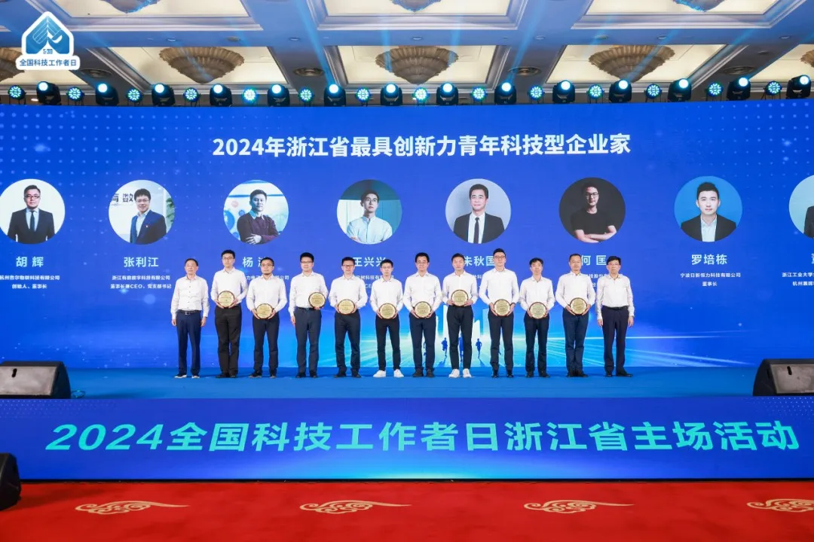
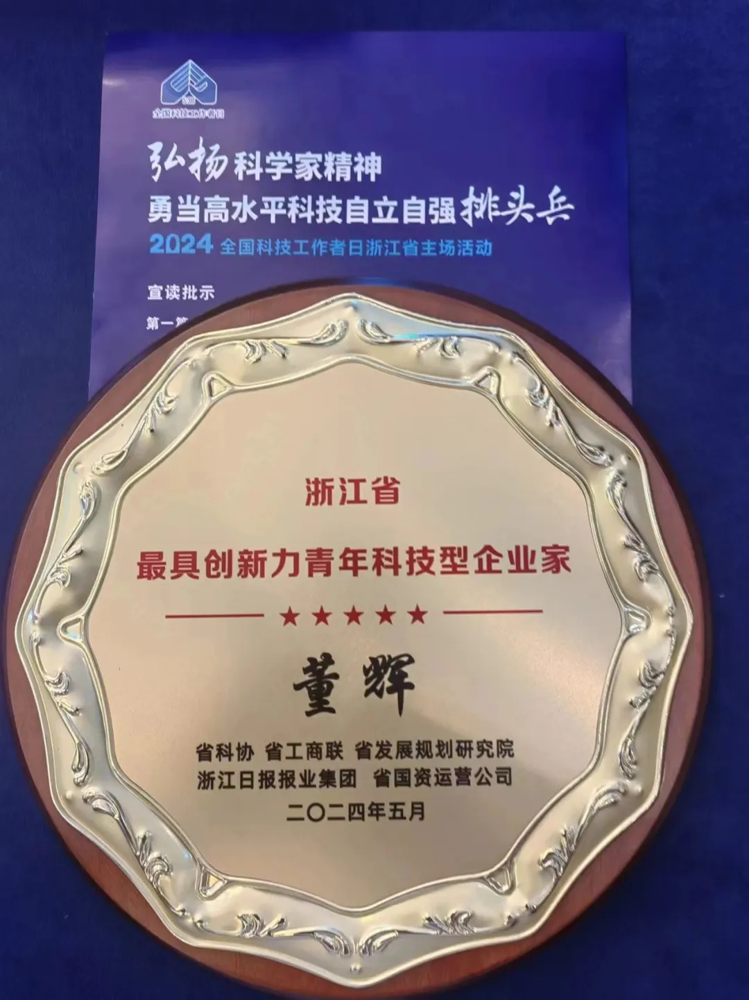
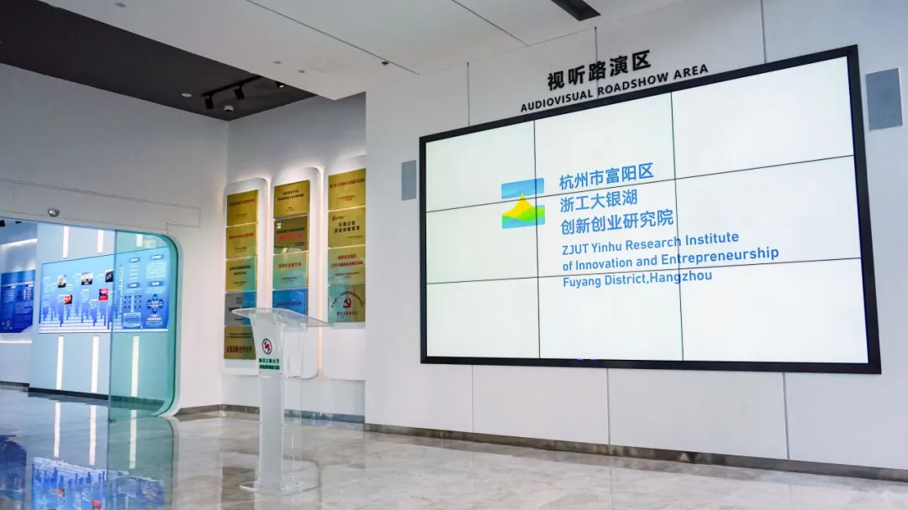

董辉教授成功入选首批“浙江省最具创新力青年科技型企业家”

董辉接受表彰（右三为董辉教授）

奖牌

浙工大银湖创新创业研究院视听路演
拍摄时间：2024年06月11日
拍摄地点：富阳
由浙江省科协、省工商联等五单位联合选育的首批10名“浙江省科技型企业家”、10名“浙江省最具创新力青年科技型企业家”正式公布。其中，杭州展晖科技有限公司总经理董辉因在高校科技创新与地方成果转化方面的卓越成效，成功入选首批“浙江省最具创新力青年科技型企业家”，也是此次富阳唯一入选的企业家代表。
×